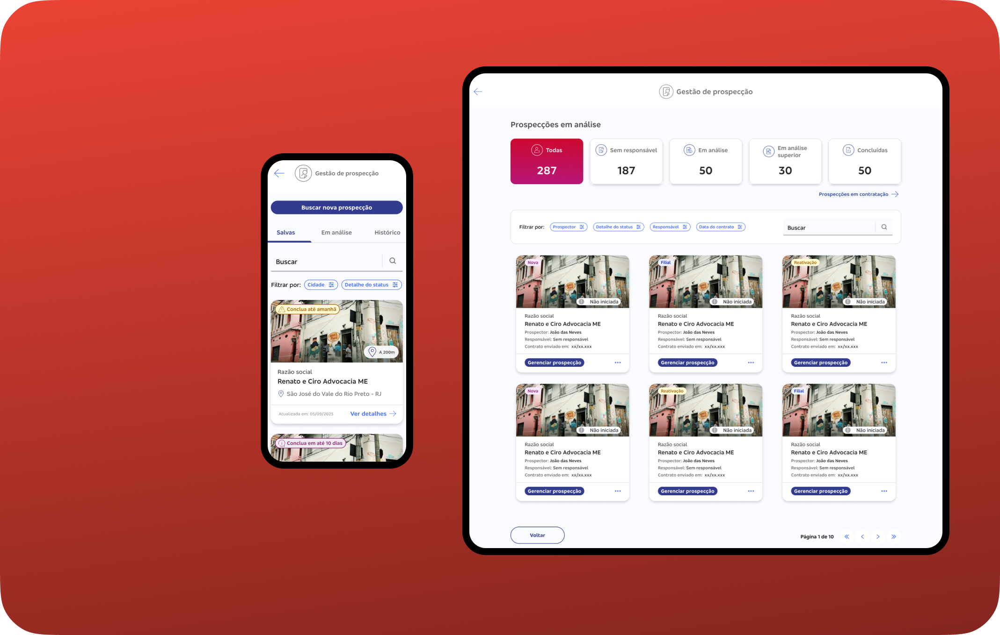
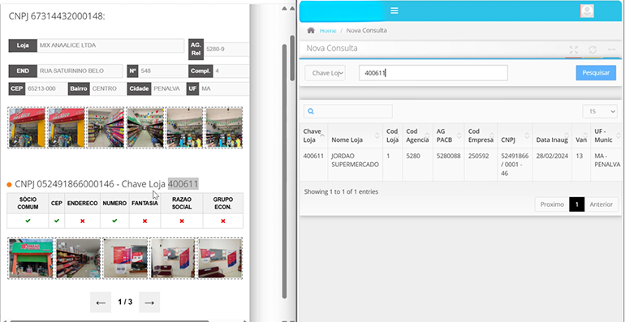
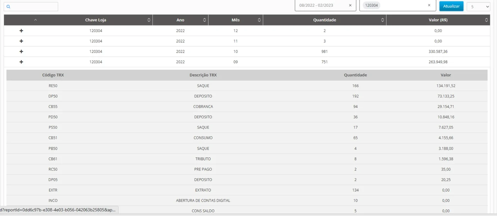
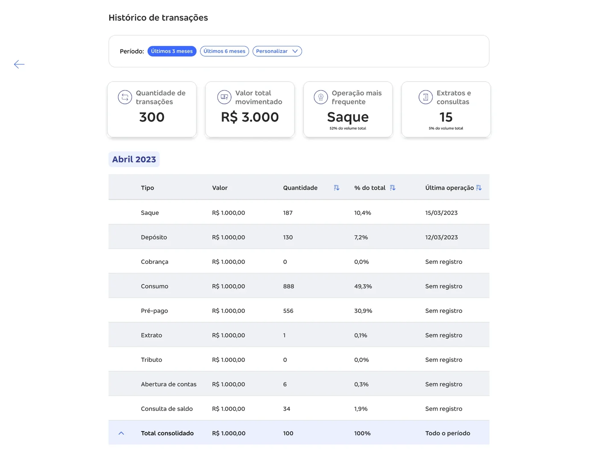
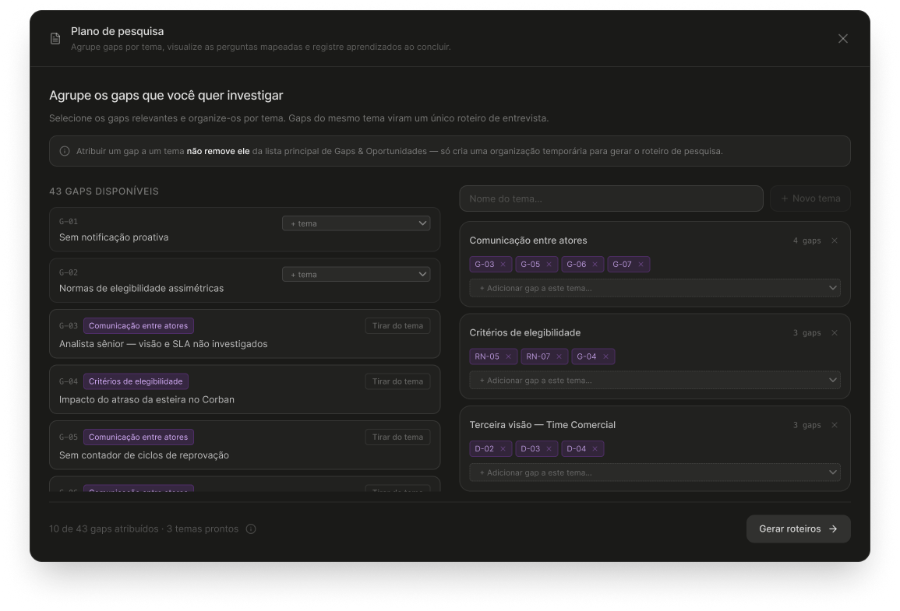
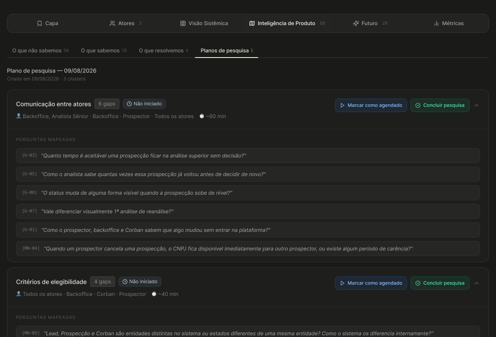

O Bradesco Expresso opera uma rede de mais de 41 mil correspondentes bancários, que atuam como pontos de atendimento bancário em diferentes regiões do país, principalmente em regiões muito remotas em que o sistema bancário tradicional tem dificuldade de chegar.
A prospecção de novos correspondentes é um ecossistema que envolve múltiplos atores, regras de negócio, análises operacionais e etapas de aprovação.
Ecosistema de prospecção — Bradesco Expresso
Time comercial
Em discovery
Prospector
Mobile · campo
Corban / Lead
Tablet/Smart POS · assinatura
Analista backoffice
Desktop · análise
Analista sênior
DescobertoDesktop · alçada
Quando entrei no projeto, parte importante dessa operação estava apoiada em uma plataforma legada e em processos que ainda carregavam etapas manuais e estruturas construídas ao longo do tempo. E até agora (outubro 2026), ele conta com duas frentes principais: o backoffice, que controla as aprovações através de uma plataforma legado fragmentada e o prospector, que até então é um processo majoritariamente analógico e manual. Em paralelo, descobrimos novos atores que precisam entrar no escopo e tem atuação direta no processo.
EVOLUÇÃO DE ESCOPO
INÍCIO / BRIEFING
2 atores
Prospector + Backoffice
Tablet como device
VIRADA 1 / DISCOVERY 1
Tablet ➡ Mobile-first
Smartphone pessoal do prospector na rua
campo invalidou premissa
VIRADA 2 / DISCOVERY 2
+3 atores surgem
Analista sênior, Corban, Agência de relacionamento
complexidade real emerge
ATUAL / HOJE
5+ atores · 4 frentes
Piloto em andamento
Escopo 3× maior que o briefing
Minha missão é reconstruir a experiência de uma operação complexa em uma nova plataforma, conectando as jornadas de prospector, backoffice e, posteriormente, outros atores do ecossistema.
Conduzo desde investigação e testes com usuários até arquitetura de fluxos e articulação de decisões com Produto e Tecnologia. Pra não perder de vista as necessidades e descobertas do ecossistema, construí um sistema de documentação de regras, decisões e hipóteses que funciona como a inteligência de produto para guiar melhorias e resolver gaps existentes.
Como a plataforma ainda está em piloto sem instrumentação, estruturo métricas e hipóteses a partir das evidências disponíveis (testes com usuários, estimativas do comercial, mapeamento de interações) para viabilizar mensuração quando a instrumentação chegar.
Pra não repetir os erros do processo anterior, construí um sistema de documentação viva que funciona como inteligência de produto: centraliza o que o time precisa saber pra tomar decisões.
PRODUCT INTELLIGENCE SYSTEM
BASE VIVAINSTRUMENTO 01
Jornadas dos atores
INSTRUMENTO 02
Histórico de decisões
SISTEMA CENTRAL
Product Intelligence System
INSTRUMENTO 03
Service Blueprint
INSTRUMENTO 05
Cenários futuros
INSTRUMENTO 04
Referências cruzadas
No último ciclo, a plataforma realizou 30 entregas em 5 frentes: gestão de prospecção (jornada end-to-end), aprovação via alçada superior, mar aberto, armazenamento GCC e API de instalação. Conduzo diretamente a experiência das duas primeiras frentes.
O primeiro ano foi mais negócio do que design (ou uma boa mistura dos dois): levantar regras, mapear processos, fazer discovery. A prospecção existia, mas era analógica: papel, deslocamento até agências, informação na cabeça das pessoas. Não havia plataforma, havia processo manual.
O processo que a plataforma substituiu
5 etapas com deslocamento à agência para 4 etapas direto do celular
ETAPA 01
Visita ao local
Deslocamento até o estabelecimento
ETAPA 02
Coleta em papel
Informações anotadas manualmente
ETAPA 03
Fotos avulsas
Câmera pessoal, sem vínculo
ETAPA 04
Ida à agência
Transcrever dados no sistema
× Eliminada no digital
ETAPA 05
Agência envia
Backoffice recebe pra análise
Cada prospecção exigia pelo menos 2-3 deslocamentos. As informações passavam por transcrição manual antes de chegar ao analista.
PCO / A transformação do processo
5 etapas → 4 etapas
sem deslocamento à agência
ETAPA 01
Consulta elegibilidade
Verifica antes de investir tempo
Antes da visita
ETAPA 02
Salva na carteira
Carteira digital do prospector
ETAPA 03
Visita única
Preenche + fotos pelo app
ETAPA 04
Envio direto
Backoffice recebe em tempo real
Antecipação de cenários Consulta elegibilidade
Na consulta de elegibilidade também entram verificações de duplicidade e pendências financeiras. Antes, esses problemas só apareciam na reprovação do backoffice, gerando um ciclo inteiro de retrabalho. Ao antecipar pro prospector, eliminamos esse ciclo.
A etapa da agência foi eliminada. O prospector resolve tudo pelo celular, em campo, numa visita só.
A jornada inteira tinha sido mapeada para tablet: era o dispositivo padrão do Expresso, e o time de negócio tinha certeza de que era o certo. O usuário final não participou dessa decisão. Quando finalmente conseguimos acesso ao prospector em campo, descobrimos que ele usava o celular pessoal. Um ano de protótipo construído para o device errado.
PCO / ANÁLISE DE PROSPECÇÃO
Suposição x realidade
Cenário imaginado
📱 Device: tablet corporativo
🏢 Contexto: escritório/loja
👤 Usuário: prospector apenas
o que era verdade
Device: celular pessoal + desktop
Contexto: rua, sol, conexão instável
Usuários: prospector + comercial + coordenador
Não foi incompetência, foi o custo de digitalizar um processo que ninguém conhecia por inteiro. Mas o débito de design estava criado, e precisava ser resolvido antes de escalar.💀💀💀
Tá, e como vocês resolveram isso?
Resolver débito de design não é só redesenhar: é negociar espaço na sprint. Aproveitamos uma janela de refatoração da plataforma e a carga fixa de 20% do tempo que o time reserva pra débitos técnicos. A estratégia foi encaixar as melhorias de UX dentro dessa janela, tratando débito de design com a mesma seriedade que débito técnico.
Como melhorar a exibição de uma tabela no mobile? Não usando tabela.
A solução foi substituir a tabela por cards que expõem a informação crítica direto: status, nome, próxima ação. O prospector bate o olho e age. De ~4 interações pra 1-2 por ação.
Eu tinha duas hipóteses para resolver um formulário gigante
Mas, conversando com desenvolvimento, identifiquei que a preocupação real não era só usabilidade: era perda de dados. O prospector preenche em campo, com conexão instável. Se a conexão cai no meio de um formulário monolítico, tudo se perde.
Hipótese A: Wizard
Salvamento por etapa
Progresso visível
Conexão instável → sem perda
Hipótese B: Accordion
Visualização melhor
Salvamento: tudo ou nada
Conexão cai → perde tudo
Depois que os dois débitos foram mapeados, a pergunta mudou:
Parte do trabalho de digitalizar um serviço analógico é encontrar oportunidades de melhorar o processo.
O que eu consigo melhorar? O que é possível automatizar?
E ai nos encontramos oportunidades que envolvem até processos de arrecadação. Por exemplo: em caso de reativação, uma pessoa que já foi um correspondente e quer voltar a ser, não pode em caso de pendências financeiras com o banco. Como esse processo acontece hoje? O prospector faz a prospecção e só descobrimos pendências quando isso vai pra análise do backoffice e ele tem que devolver pro prospector para que o prospector resolva. E se nós invertermos o processo? O prospector é avisado logo no inicio que existem essas pendências, incentivamos a arrecadação e a regularização para que só depois isso vá para o backoffice.
E melhorar o processo vai além de criar uma tela.
Substituir plataformas legadas é descobrir, a cada semana, mais um sistema interligado, mais uma gambiarra operacional que sustentava o processo. O backoffice do PCO não foi diferente: cenários novos apareciam antes mesmo do lançamento oficial, e o escopo mudava em tempo real.
Escolhi dividir essa jornada em duas partes: o que foi reconstruído do legado (esta página) e o que precisou ser ajustado e foi validado por testes (Parte II).
No legado, a duplicidade de uma prospecção era comunicada por um farol de quatro cores. Dois problemas graves, e nenhum deles de estética: a semântica das cores não era evidente, e o check/X estava invertido — uma inversão cognitiva que obrigava o analista a traduzir "o certo aqui é o errado" toda vez.

Ou seja, o sinal visual não correspondia ao modelo mental de quem usava. Substituí o farol por uma comparação direta entre a nova prospecção × o correspondente existente, campo a campo. O analista deixou de interpretar uma "temperatura de risco" e passou a investigar evidências concretas.
Essa inteligência também migrou para o início da jornada do prospector: a consulta de elegibilidade já antecipa duplicidades antes da visita, reduzindo o ciclo de análise do backoffice.
Com o produto maduro, ficou claro que o analista de backoffice precisava enxergar exatamente o que o prospector enxerga — não para editar, mas para entender o contexto da prospecção que estava analisando.
O PO queria colocar essa visão num módulo de sistema separado. Defendi que não era módulo novo: era outra visão da mesma prospecção, e pertencia à gestão de prospecção como um switch. O time escolheu o switch de visão.
E aqui a reconstrução corrigiu um erro do legado: lá, o backoffice conseguia interagir com a prospecção, comportamento quebrado que nunca deveria existir. Na nova plataforma ele vê tudo — campos preenchidos, campos que faltam, o que tem erro — mas não executa nenhuma ação. A melhor forma de evitar a edição acidental é remover a possibilidade dela existir.
A interface do legado exibia dados, mas não ajudava o analista a interpretá-los. O número estava lá; o significado, não.
Trouxe à superfície o histórico que já existia no sistema mas ficava enterrado: reativação, filial, comportamento anterior do estabelecimento. O dado que antes precisava ser caçado passou a aparecer no momento em que importa para a decisão.


A distribuição de prospecções entre analistas era manual. A proposta era automatizá-la — mas o coordenador resistiu, porque uma automação cega ignoraria o contexto que ele conhecia de cada analista.
A saída foi uma automação parcial, com parâmetros: a máquina distribui segundo regras, e o coordenador mantém o controle de ajuste sobre os casos que fogem do padrão.
A lição ficou: automação que ignora contexto gera resistência. Automação que preserva o julgamento humano onde ele importa, não.
Pensei a integração de IA em duas camadas. Na coleta, feedback em tempo real para alimentar o sistema com o que o analista decide e por quê. Na análise, uma triagem assistida por IA que organiza o trabalho — sempre com human-in-the-loop, o analista como decisor final.
Status: proposta validada com o time, wireframes entregues como input para o roadmap de IA. Aguardando priorização.
A primeira reconstrução resolveu o legado. A segunda resolveu o que a primeira não sabia que precisava resolver.
Esse projeto passou por repriorização, mudança de escopo, de PO e de time. Mas o que mais mudou mesmo foi o que a gente sabia. Mais contato com o usuário, discoveries mais profundos, novas jornadas entrando: tudo isso foi atualizando as necessidades. E a pergunta deixou de ser ‘como a gente paga o débito de design’ pra virar ‘qual é de fato o papel do backoffice dentro da análise’.
No fluxo feliz de uma nova contratação, uma prospecção tem pelo menos:
E isso é só o fluxo feliz: cenários de reativação e contestação podem dobrar a quantidade de informações analisadas.
Acompanhando os testes e as entrevistas e entendendo como era o dia a dia do nosso backoffice, percebemos que eles navegavam entre vários sistemas para tomar uma decisão, o que impactava diretamente no tempo necessário para realizar uma análise.
"Porque quebra o nosso fluxo de análise, né? Quando a gente está vendo a nossa análise aqui, a gente precisa consultar outros sistemas, você acaba saindo daquele estado de flow na sua cabeça."
— Analista operacional, Teste 3
Mas a minha estrutura antiga não suportava a escala que o meu analista precisava que existisse.
E a pergunta mudou: o que precisa existir que nunca existiu?
A plataforma tinha uma estrutura baseada em abas horizontais. Mas novas necessidades continuavam aparecendo constantemente: reativação; análise de similaridade; análise superior; contestação; novos dados; futuras integrações.
Fora a quantidade de informações que um fluxo simples sozinho exige que o analista confira.
Adicionar tudo como novas abas aumentaria progressivamente a complexidade. Adicionar tudo dentro das abas existentes gera um problema de hierarquia, que constantemente resulta em discussões do tipo: onde vamos colocar essa informação? Além de aumentar a carga cognitiva necessária pra analisar e lembrar de todas aquelas informações.
A minha proposta foi uma reorganização da arquitetura da plataforma, com agrupamento de funcionalidades, contexto persistente e decisões próximas da informação. E isso soluciona o problema de quebra de fluxo, hierarquia de informação e o melhor: escalabilidade.
Agora eu tenho uma estrutura que suporta e organiza o crescimento da plataforma. Pra que eu não acabe criando o próximo legado.
No legado e na reconstrução inicial, o analista percorria todas as seções da prospecção, formava uma opinião mental sobre cada uma e só no final tomava uma decisão única: aprovar ou reprovar. Entre a primeira seção analisada e a decisão final, passava, no mínimo, por 70 campos. O problema não era de interface, era de memória.
Atual
Analista passa por cada seção “só vendo” e conta só com a memória
↓
Chega na aprovação e tem que tomar UMA decisão lembrando de TUDO
↓
Se não lembrar de algo, tem que voltar pra conferir ou corre o risco de tomar uma decisão incompleta
Riscos
→ Se precisar voltar para conferir: retrabalho e repetição
→ Se tomar decisão incompleta: retrabalho e repetição
↻ alto risco de RETRABALHO E CANSAÇO COGNITIVO
Proposta
Analista decide por seção, com a informação relevante
↓
Tomar uma decisão final mais assertiva com a conferência
Se necessário, edita inline sem precisar voltar
↓
Conclui com mais visibilidade e segurança
✓ EVITA dependência da memória e DIMINUI risco de retrabalho
"É melhor eu vir decidindo parte a parte mesmo, eu vou analisando ponto a ponto. Até para no final lá, na hora da conferência, eu já lembrar tudo que eu fiz aqui." — Coordenadora, Teste 3
"Está perfeito. Porque na aba de conferência, a gente vai analisar tudo o que a gente analisou anteriormente, porque querendo ou não, como são muita coisa, a gente vai acabar esquecendo o que a gente fez." — Analista operacional, Teste 2
"Se eu estou reprovando aqui na matriz, eu estou lá no final, na hora de tomar a decisão aqui eu já esqueci." — Coordenadora, Teste 1
*O quarto participante (analista superior/alçada) não foi testado nesse ponto. O perfil dele tem um fluxo decisório diferente: o parecer dele se aplica apenas à restrição escalada, não à prospecção inteira. Microaprovações seção a seção não faziam sentido pro workflow dele, e o teste confirmou isso: "eu não vou ficar mexendo em parecer item a item, não."
Um dos resultados mais valiosos dos testes foi descobrir onde as nossas próprias premissas estavam erradas. Em 4 pontos, os usuários nos mostraram que o design precisava mudar. Inclusive, algumas coisas nem eram o objetivo inicial do teste.
"Quanto mais simples melhor."
Rejeição geral, sem análise foto a foto. Ajustamos para os próximos testes e trouxemos o comparativo, e a alteração teve aprovação geral. Foi uma solução boa para o usuário e para a engenharia!*
"Eu já trocaria para conclusão, decisão."
O modelo mental do analista superior não é conferir: é decidir.
"É muito míope a visão se eu for olhar só o restritivo."
Ele precisa do contexto completo, o que inclusive contradisse a informação inicial que a coordenadora trouxe, ao dizer que ele só conferia a sua parte.
"Ele é um item que não está aprovado nem reprovado. Ele é um item que está em análise."
Terceiro estado necessário.
Descobrir o modelo mental do analista na reprovação de fotos também nos ajudou a trazer esse modelo para outros cenários, como a análise de duplicidade, trazendo um comentário geral para tudo que o analista definisse como irregular, em vez de fazer comentários individuais por irregularidade.
O teste com o analista superior revelou um modelo mental que não tínhamos mapeado. A hipótese era que, ao receber uma prospecção escalada, ele olharia apenas o item que gerou a escalação. O teste mostrou o contrário.
"Para eu dar o meu parecer, eu não vou olhar especificamente para o item que foi recusado, eu vou olhar para tudo. É muito míope a visão se eu for olhar só o restritivo." — Analista superior, alçada nível 1, Teste 4
Esse insight gerou duas mudanças concretas:
Durante os testes, identificamos um padrão de priorização que vinha dos próprios usuários: prospecções novas primeiro, mais antigas na fila depois, contestação deixada pro final.
A funcionalidade de próxima prospecção sugerida nasceu dessa observação. E cada perfil definiu espontaneamente o que "próxima" significava pra ele:
Durante os testes, identificamos um padrão de priorização vindo dos usuários:
A coordenadora validou com uma ressalva operacional importante: a sugestão precisa respeitar a alocação prévia. No modelo atual, a distribuição é igualitária e centralizada ("são 3 analistas, tem 30 contratos, é 10 para cada, é tudo por igual"). Ninguém começa a analisar antes da divisão. A funcionalidade precisa operar dentro dessa regra, não contra ela.
"COM CERTEZA, COM CERTEZA... Arrasaram gente, parabéns." — Analista operacional, Teste 4
A analista do teste nem me deixou terminar a pergunta sobre se ela usaria ou não a funcionalidade, com a empolgação. É muito gratificante receber esse tipo de reação enquanto designer!
Um padrão que apareceu nos testes: analistas reconstruíam contexto manualmente a cada etapa. Escreviam as mesmas justificativas, buscavam as mesmas informações em outros sistemas, documentavam decisões sem estrutura padronizada. Esse trabalho repetitivo não é análise: é burocracia operacional.
A partir desse padrão, comecei a explorar como a plataforma poderia reduzir essa carga sem tirar autonomia do analista. A premissa: se a plataforma já tem os dados, ela pode fazer o trabalho pesado de organização e deixar o analista focar no julgamento.
Algumas das possibilidades mapeadas:
Isso reduz o trabalho repetitivo de documentação e cria continuidade de contexto entre atores (o que um analista decidiu fica visível pro próximo, com a justificativa intacta).
Essa camada ainda está em exploração: nasceu dos testes, tem hipóteses mapeadas, mas ainda não foi validada com usuários. Trago aqui porque ela representa o tipo de pensamento que diferencia uma reconstrução de interface de uma reconstrução de experiência, e mostra exatamente o que estou tentando trazer pra toda a jornada: decisões mais inteligentes e assertivas, otimizando o tempo do analista.
Bacana, Lua. E como você negociou com o time de tecnologia e negócio para que essas melhorias acontecessem?
Conseguimos encontrar uma oportunidade de melhoria na janela de refatoração da plataforma. O time de tecnologia comprou nossas propostas e conseguimos encaixar na porcentagem de tempo destinada ao débito técnico. É um processo rápido? Não. Mas conseguimos uma janela que funciona pra todo o time.
A ideia inicial era modesta… até singela: eu queria organizar informações pra um discovery. Só isso.
O que acendeu o alerta foi descobrir que o Time Comercial ia entrar no radar em breve, como uma terceira visão do produto. E até pouco tempo atrás, eu nem sabia da existência desse time. Então, eu pensei: como é que eu consigo blindar o time desse tipo de situação? Como eu consigo mapear tudo que eu já sei sobre o PCO, todas as dores, todos os pontos cegos, num lugar só, antes de mais uma frente chegar?
Porque a gente já tinha feito milhares de FigJams. E FigJam, no dia a dia, some. Ninguém volta nele. Vira aquele arquivo com trocentas páginas que todo mundo jura que vai consultar e ninguém consulta. Eu não queria fazer mais um.
Só que quanto mais eu estressava as informações, mais eu percebia que não era caso de copiar e colar o que já existia. Boa parte do que eu sabia não estava organizado em lugar nenhum, e o que estava, estava espalhado. Tive que estressar tudo de novo, do zero.
Teve uma história que me marcou e que virou o argumento central desse sistema.
Me contaram de um caso onde uma pessoa que dominava um processo faleceu. E o processo morreu junto com ela. Ninguém mais sabia como aquilo funcionava, então ninguém mais pôde mexer. O sistema virou intocável por falta de conhecimento, não por decisão.
Hoje eu estou no produto desde o começo. Eu sou a pessoa que lembra por que aquela decisão foi tomada em 2023. Mas e se eu não estivesse? E se eu saísse amanhã?
Documentar deixou de ser sobre organização e virou sobre resiliência. O sistema existe pra que o conhecimento do produto não more na cabeça de ninguém, inclusive na minha. (Sim, isso significa que eu me tornei substituível de propósito. Acho que é a coisa mais sênior que eu já fiz.)
Aqui está o teste real: o sistema não foi um exercício bonito, ele mudou o que eu sabia sobre o produto.
Descobriu o quinto ator. O briefing dizia dois. Enquanto eu mapeava as jornadas e cruzava informações, apareceram cinco. O Analista Sênior, que ninguém tinha mencionado formalmente, saiu de um comentário casual e virou um ator com fila própria, gaps próprios e nenhuma documentação de SLA.
Recuperou o porquê de decisões que já existiam. A decisão de chamar de "Pendente" em vez de "Reprovada" estava lá na prática, mas o motivo tinha se perdido. Quando foi questionada, foi necessário muito esforço para defender e relembrar o porquê da decisão, e só foi possível porque eu já estava no projeto como UX Writer (lá em 1900 e bolinha). Recuperei a justificativa e formalizei no sistema. Agora a próxima pessoa que questionar encontra resposta, sem esforço e com histórico.
Capturou os gaps que a gente descobre no meio da conversa. O status "cancelada" que não aparece no relatório, apontado pela Cássia (analista de backoffice) durante uma apresentação. Não resolvido até hoje, por prioridade. Mas registrado, com ID, esperando o discovery que tocar nesse fluxo.
Assumiu o que a gente não sabe. São 25 gaps mapeados e 19 regras de negócio, sendo 7 confirmadas e 12 ainda em aberto. Esse número em aberto não é vergonha, é o retrato honesto de um produto que digitalizou um processo que nunca esteve documentado. O valor não é ter todas as respostas. É saber exatamente quais perguntas ainda estão de pé.
Definiu métricas antes de ter dados. Nove KPIs, todos marcados com o status mais honesto possível: "Hoje: não sabemos". Qual o custo médio pra aprovar uma prospecção (os CAPs)? Quantos contatos de suporte são gerados por falta de notificação proativa? A empresa não consegue responder. Formatar como pergunta em aberto cria urgência de instrumentação de um jeito que uma meta inventada nunca criaria.
O que separa esse sistema de mais uma documentação é que ele gera coisa. Estou construindo dentro dele um gerador de plano de pesquisa: você seleciona os gaps que quer investigar, agrupa por tema, e ele monta os roteiros de entrevista com objetivo de sessão e perfil sugerido de participante, com status pra acompanhar conforme a pesquisa avança.
Ou seja: o mapa de dores vira insumo de discovery automaticamente. Em vez de eu chegar numa reunião tentando lembrar "a gente já falou disso? quando?", eu chego com o roteiro pronto, montado a partir do que já está registrado.


O que nasceu como uma necessidade do PCO acabou virando uma ferramenta com identidade própria, versionamento e escala pra outros produtos. Já apliquei a mesma estrutura no DW Safer, e tenho um template genérico e replicável pra comunidade (com dados fictícios, porque dado de produto real não sai de casa).
📁 Quer ver o sistema por dentro? Case próprio: telas, construção e como replicar.ABRIR ▸